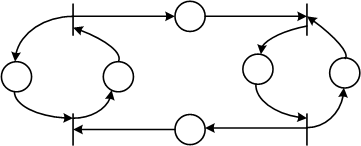

Сети Петри
Подклассы и расширения сетей Петри:
К подклассу автоматных графов относят сети Петри, в которых каждый переход имеет одну входную и одну выходную позиции. Такие сети описывают последовательные процессы и как математическая модель эквивалентны конечным автоматам. В автоматных графах легко представить конфликтные ситуации, но нельзя моделировать создание и уничтожение фишек, необходимых для моделирования параллельных процессов или ожидания.
К подклассу маркированных графов относятся сети Петри, в которых каждая позиция имеет только один вход и один выход. Маркированные графы являются двойственными по отношению к автоматным графам. Они позволяют моделировать параллельность и синхронизацию, но не могут моделировать конфликты или принятие решений, зависящих от данных. Наиболее интересными структурными компонентами маркированных графов являются циклы.

К подклассу устойчивых сетей Петри относятся сети, которые обладают следующим свойством: если при любой маркировке μ два любых перехода ti и tj оказываются разрешенными, то срабатывание одного из них не исключает возможности срабатывания другого перехода.
Временные сети Петри позволяют отразить в модели временные параметры системы. Если моделируемое событие имеет отличную от нуля длительность, как например, событие «задание обрабатывается», то оно представляется в виде двух мгновенных событий типа «начало события», «конец события» и условия «событие происходит».
Считается, что события происходят неодновременно. Позиции во временных сетях взвешиваются временем выполнения.
Раскрашенные сети Петри характеризуются тем, что каждой фишке в позициях сети сопоставляется определенный признак (цвет). Это позволяет задавать различные типы условий, объектов или ресурсов, которые характеризуют состояние системы.
Для срабатывания перехода t i-того его входная позиция должна содержать метки определенного цвета, которым помечается дуга, направленная от позиции к переходу t i-тому.
Раскрашенные сети Петри позволяют уменьшить размерность графа при моделировании сложных систем.
Е-сети, или оценочные сети – наиболее мощное расширение сетей Петри, являющееся средством описания моделей функционирования вычислительных систем. В Е-сетях учитывается фактор времени, усложнена логика работы переходов, введены различные операции над метками.